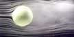

Sept. 6, 2000
John Bluck
NASA Ames Research Center, Moffett Field, CA
Phone: 650/604-5026 or 604-9000
RELEASE: 00-58AR
NASA TUNNELS TEST TENNIS BALLS; EXPAND STUDENT MINDS
NASA aerodynamics technology may well help create more competitive tennis matches between the world’s top players while stimulating student interest in science and engineering.
In recent years, improved racquet technology and faster surfaces have led to an emphasis on the serve and shorter rallies in professional tennis matches. To slow the game, the International Tennis Federation, London, England, recently approved the testing of a new ball, 6.5 percent larger in diameter, during exhibition play. They also reviewed data of Dr. Rabi Mehta and the wind tunnels at NASA Ames Research Center in the heart of California's Silicon Valley.
"The concern is that today’s top pros can serve a tennis ball at almost 150 miles per hour. On faster surfaces, such as Wimbledon, that ensures an increasing number of shorter rallies and tie-breaker sets," said Mehta, a world authority on the aerodynamics of sports balls. "A larger ball will slow things down; the trick is to figure out how much. That was the objective of experimental testing conducted in England and at Ames," he said.
To inspire school students to learn physics and engineering, Mehta began working with an engineering consulting firm, Cislunar Aerospace, Inc., Napa, CA, about two years ago. Together, they demonstrated tennis ball aerodynamics to students in order to pique their interest. Recently, Mehta explained the complex airflow around big and small tennis balls that he and his students have discovered to a Tennis Federation convention in Roehampton, England. In particular, he noted, wind tunnel tests have shown that ‘fuzz’ affects the flight of a tennis ball far more than previously believed.
"Cislunar got a NASA grant from the Learning Technologies Project to develop a web site for kids from kindergarten through grade eight (http://wings.ucdavis.edu/Tennis)," Mehta said. Cislunar CEO, Dr. Jani Macari Pallis, made an ‘Aeronautics Internet Textbook’ that includes a tennis section in the sports ball area, the most popular part of the web site, according to Mehta. "The first part of the student work was a flow visualization study of a tennis ball in a NASA-Ames 3-foot by 4-foot smoke tunnel two years ago. The data from those tests are on the web site. Mainly, we performed the study to show the kids the basic principles of fluid mechanics," Mehta added. Fluid mechanics is the study of fluid flow (gas or liquid), its properties, characteristics and behavior.
More recently, the investigators measured the drag on regular as well as new, larger tennis balls over a wide range of flow speeds in the NASA-Ames 15-inch by 15-inch wind tunnel. "With the help of data collected by two college summer students, I think, for the first time, I understand the full aerodynamics of a tennis ball in flight," Mehta said.
 Wind Tunnel Test of New Tennis Ball. Click on the image to access a 10x5in. image. The image is 92k opens to 764K at 72dpi.
Dr. Mehta holding a regular and the larger tennis ball. Publication Quality
Wind Tunnel Test of New Tennis Ball. Publication Quality, 9.8x 6.7in, 467k to 17m at 300dpi
Initially, we could not determine why the drag on tennis balls is so much higher than that on other sports balls, he said. "Then we realized that the 'fuzz' on the ball plays a much larger role in the aerodynamics than had been anticipated in the past," Mehta said.
"If you have a smooth ball, such as a ping pong ball, it produces a large air wake, like that of a motor boat. The ball's large wake creates drag that slows the ball's flight," Mehta said. "If you add roughness, like the dimples on a golf ball, air disturbance near the ball's surface actually helps produce a smaller air wake that creates less air drag, and the ball can go farther," he explained. A smooth golf ball might only go about 100 yards compared to the 300 yards covered by today's dimpled golf balls, he added.
"Even though a tennis ball does not have a smooth surface, you get a bigger wake because of the very rough surface, plus the effect of additional drag from each fuzz filament, which I have termed fuzz drag," he said. "Fuzz drag makes the aerodynamics of the tennis ball even more interesting since the fuzz elements change orientation with increased velocity and the fuzz wears off during play."
Mehta said the complex interactions of air density, air ‘stickiness,’ air speed and physical size and surface roughness, normally are major factors in determining how sports balls fly through the air.
Air is a bit viscous or ‘sticky,’ resulting in ‘skin-friction’ drag, he explained. When a smooth ball flies through air at a slower speed, a layer of slow-moving air forms around the ball's front. The sticky, smooth-flowing air layer separates from the ball's surface, forming a wake that begins in a circle like the edge of a grapefruit that has been sliced in half. The wake behind the smooth ball is almost as wide as the ball, creating a great deal of ‘pressure’ drag that adds to the sticky air drag on the front side of the flying ball.
Surface roughness, such as dimples on a golf ball, produce turbulence in the slow-moving air close to the ball and the more energetic layer separates much later, thus leading to a smaller wake.
"The two types of flow can easily be demonstrated at home," Mehta said. "Go to a water faucet, turn it on at a slow rate, and you get a smooth stream of water almost to the bottom of the sink. Increase the flow rate, and you get a splashy, chaotic flow; this is turbulent flow," he concluded.
NOTE TO BROADCASTERS: Broadcasters may downlink NASA satellite "video file" footage related to this story, today Sept. 6, 2000. There also may be refeeds of the story on Sept. 7.
After Sept. 7, depending upon satellite availability, additional re-feeds of the material may also be available; please telephone Ray Castillo at 202-358-4555 in Washington, DC, to make a re-feed request.
Please note that all TV feed times, unless otherwise listed, are Eastern Times. The NASA Video File normally airs at 12:00 p.m., 3:00 p.m., 6:00 p.m., 9:00 p.m. and 12:00 a.m. NASA Television is available on GE-2, transponder 9C at 85 degrees West longitude, with vertical polarization.
Frequency is on 3880.0 Megahertz, with audio on 6.8 Megahertz. Any changes to the line-up will appear on the NASA video file advisory on the web at ftp://ftp.hq.nasa.gov/pub/pao/tv-advisory/nasa-tv.txt
-end-
To receive Ames press releases via email, send an email with the word "subscribe" in subject line to: ames-releases-request@lists.arc.nasa.gov
To unsubscribe, send an email to:ames-releases-request@lists.arc.nasa.gov with "unsubscribe" in subject line. Also, the NASA Ames Public Affairs Home Page at URL, http://george.arc.nasa.gov/dx inludes press releases and JPEG images in AP Leaf Desk format minus embedded captions.
{kind=link}
{kind=link}
{kind=link}